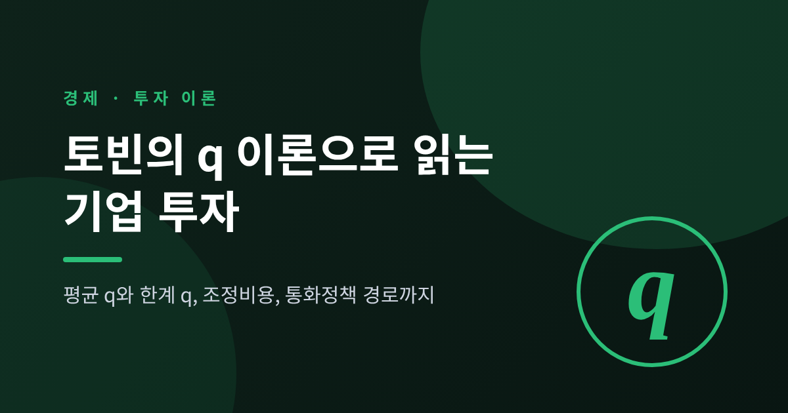
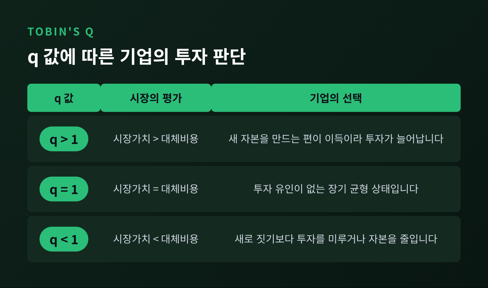
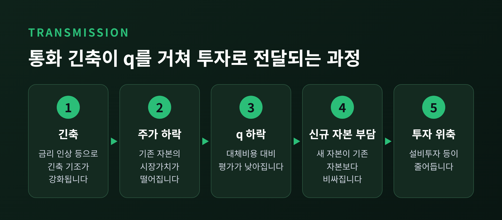
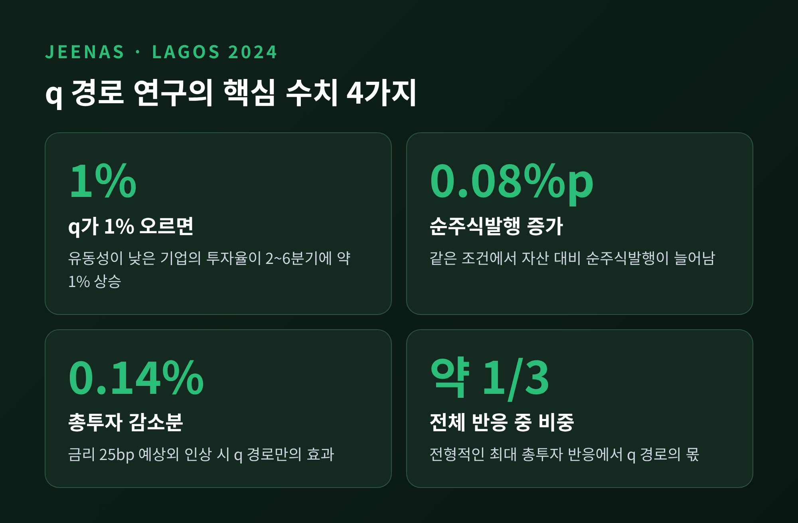
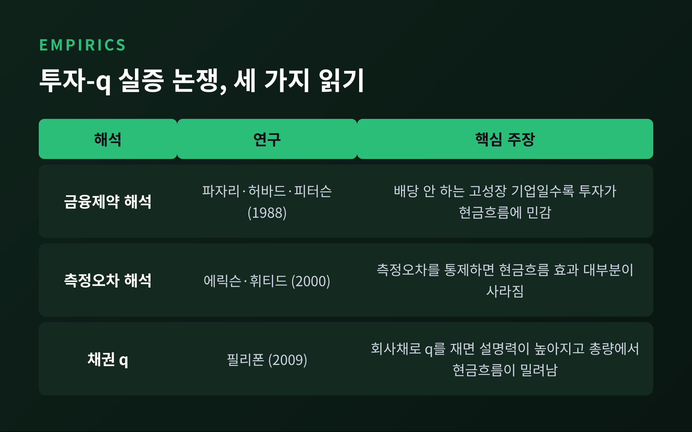
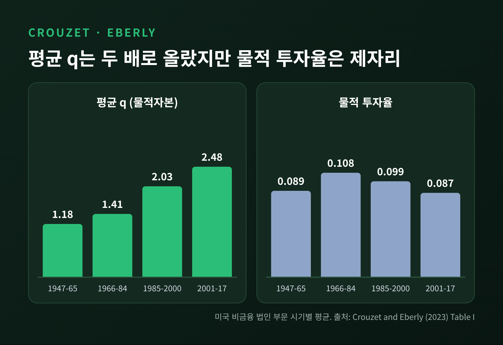

이번 글에서는 토빈의 q 이론을 정리해 보겠습니다. 기업의 주식시장 가치가 자산의 대체비용보다 크면 투자는 늘고, 작으면 줄어든다는 것이 이론의 핵심입니다. 평균 q와 한계 q의 차이, 하야시 조건, 조정비용, 통화정책 경로, 그리고 무형자산 시대에 드러난 한계까지 차례로 살펴봅니다.
세 줄 요약
q는 기업(자본)의 시장가치를 그 자산을 새로 사들이는 데 드는 대체비용으로 나눈 값입니다.
이론상 투자를 결정하는 것은 한계 q이고, 관측 가능한 것은 평균 q입니다. 하야시(1982)는 두 값이 같아지는 조건을 보였습니다.
미국 자료에서는 평균 q가 크게 올랐는데도 물적 투자율은 제자리였습니다. 지대와 무형자산이 그 간극의 큰 몫을 설명한다는 것이 최근 연구입니다.
토빈은 1969년 논문 「A General Equilibrium Approach to Monetary Theory」에서 q를 "자본의 가치를 그 대체비용에 대비한 것"으로 정의했습니다. 분자는 시장이 매기는 기존 자본의 값이고, 분모는 같은 자본을 지금 새로 만들 때 드는 비용입니다.
가정을 하나 해 보겠습니다. 어떤 기업의 공장을 새로 짓는 데 100억 원이 들고, 주식시장이 그 공장이 포함된 기업을 150억 원으로 평가한다면 q는 1.5입니다. 이때 기업은 100억 원을 들여 150억 원짜리 자산을 만들 수 있으니, 투자할 이유가 생깁니다. 반대로 시장 평가가 80억 원이라면 q는 0.8입니다. 새로 짓기보다 기존 자산을 사거나 투자를 미루는 편이 이득입니다.
토빈은 투자율이 "무엇엔가 관련된다면 q와 관련되어야 한다"고 썼습니다. 장기 균형에서는 q가 1에 수렴한다고 보았습니다. 시장이 자본을 대체비용 그대로 평가하는 상태입니다.
이 발상은 학계에서 높이 평가받았습니다. 1981년 노벨 경제학상 위원회는 토빈의 업적을 "금융시장과 그것이 지출, 고용, 생산, 물가와 맺는 관계에 대한 분석"으로 요약했습니다. 설명에는 이런 대목이 있습니다. 주가 같은 기존 자본의 가격이 떨어지는데 신규 자본의 비용이 안정적이거나 오르면 투자가 위축된다는 것입니다.
참고로 비슷한 비율은 이전에도 쓰였습니다. 마리스와 칼도어의 연구가 먼저라는 서술이 있으나, 이는 위키백과 수준의 2차 자료입니다. 투자 이론으로 정립하고 널리 퍼뜨린 사람이 토빈이라는 점까지만 말씀드립니다.

여기서 실무와 이론 사이에 틈이 생깁니다. 이론이 말하는 q는 한계 q입니다. 자본을 한 단위 더 늘렸을 때 늘어나는 가치를 그 단위의 대체비용으로 나눈 값입니다. 그런데 우리가 실제로 볼 수 있는 값은 평균 q입니다. 기업 전체의 시장가치를 전체 자본의 대체비용으로 나눈 값입니다. 실무에서는 대체비용을 구하기 어려워 주식과 부채의 시장가치를 장부가로 나누는 근사가 흔히 쓰입니다.
하야시는 1982년 『Econometrica』에 실린 논문에서 이 문제를 풀었습니다. 토빈의 추측, 곧 투자가 한계 q에 달려 있다는 생각이 조정비용을 가진 기업의 최적 자본축적 문제와 같은 이야기임을 보였습니다. 아울러 한계 q와 평균 q 사이의 정확한 관계를 도출했습니다. 세금을 반영한 한계 q도 평균 q 자료로 계산했습니다.
두 값이 같아지는 조건은 흔히 이렇게 정리됩니다. 시장이 완전경쟁이고, 생산이 규모수익불변이며, 조정비용 구조도 같은 종류의 동차성을 가져야 합니다. 이 조건이 깨지면 값이 달라집니다. 예컨대 기업에 시장지배력이 있으면 한계 q는 평균 q보다 작아집니다. 평균 q가 높아 보여도 추가 투자의 가치는 그만큼 크지 않을 수 있다는 뜻입니다.
q가 1.5라면 기업은 공장을 곧바로 두 배로 늘려야 할 것 같습니다. 그러지 않는 이유는 조정비용입니다. 설비를 급히 들이면 설치와 교육, 생산 중단에 비용이 듭니다. 이 비용은 속도가 빨라질수록 가파르게 늘어납니다. 그래서 기업은 q가 높아도 점진적으로 투자를 늘립니다.
필리폰(2009)의 모형이 이 구조를 단순하게 보여 줍니다. 이차함수 형태의 조정비용을 가정하면 투자율은 q에서 일정한 값을 뺀 뒤 조정비용 계수로 나눈 값이 됩니다. 계수가 클수록 같은 q에서도 투자가 느리게 반응합니다. 필리폰은 이 계수를 8년으로 놓았습니다. 기존 추정치가 약 2년에서 약 20년까지 크게 흩어져 있었기 때문입니다.
이 폭 자체가 이론의 약점을 말해 줍니다. 조정비용은 눈에 보이지 않는 값이고, 추정할 때마다 달라졌습니다.

토빈은 금융정책이 총수요에 영향을 주는 주된 경로가 자본에 대한 평가를 바꾸는 것이라고 보았습니다. 경로는 단순합니다. 긴축이 주가를 누르면 q가 내려가고, 기존 자본에 비해 새 자본이 비싸지며, 투자가 줄어듭니다. 통화정책 전달경로는 금리, 환율, 기타 자산가격, 신용으로 나누는 것이 통상적이며(미시킨 1995), q 경로는 이 가운데 자산가격 경로에 속하는 것으로 흔히 설명됩니다.
이 경로가 얼마나 큰지는 오래 논쟁거리였습니다. 예나 지금이나 확답은 쉽지 않습니다. 다만 최근 연구가 숫자를 내놓았습니다. 예나스와 라고스(2024)는 『Journal of Political Economy』 논문에서 통화정책 충격과 기업별 주식회전율을 엮어 q 변화를 분리해 냈습니다. 결과는 이렇습니다.
유동성비율이 중위 미만인 기업에서는 q가 1% 오르면 투자율이 2~6분기 사이 약 1% 오릅니다.
같은 기업은 순주식발행도 자산 대비 0.08%p 늘립니다.
유동성이 넉넉한 기업에서는 유의한 반응이 나타나지 않았습니다.
연준 기준금리를 25bp 예상 밖으로 올리면 상장기업 투자는 4분기 뒤 약 0.31% 줄어듭니다. 상장기업이 비주거 고정투자의 약 45%라는 점을 반영하면, q 경로만으로 총투자가 약 0.14% 감소합니다. 저자들은 이를 전형적인 최대 투자 반응의 약 3분의 1로 추산합니다.
정리하면 q 경로는 모든 기업에 같은 힘으로 작동하지 않습니다. 자금 사정이 빠듯해 주식 발행에 기대는 기업에서 더 강하게 나타납니다.

기업 자료로 투자를 q에 회귀시키면 설명력이 낮게 나옵니다. 잔차는 현금흐름과 상관되고, 계수가 암시하는 조정비용은 비현실적으로 큽니다. 이론은 우아한데 자료가 따라주지 않았습니다.
이 간극을 두고 해석이 갈립니다.
금융제약 해석: 파자리, 허바드, 피터슨(1988)은 배당을 하지 않는 고성장 기업일수록 투자가 현금흐름에 민감하다는 점을 보였습니다. 외부 자금이 내부 자금보다 비싸서 생기는 현상이라는 읽기입니다.
측정오차 해석: 에릭슨과 휘티드(2000)는 측정오차를 고려한 추정을 하면 현금흐름 효과 대부분이 사라진다고 주장했습니다. 한계 q를 제대로 재지 못해 생긴 착시라는 것입니다.
시장지배력 해석: 시장지배력이 있으면 평균 q와 한계 q가 어긋나, 평균 q 회귀가 잘못 설정됩니다. 이 설명은 보조 자료에서 확인한 것이어서 단정하지 않겠습니다.
어느 쪽이 맞는지 이 글에서 가르지는 않겠습니다. 다만 측정을 개선하자 설명력이 달라진 사례는 분명합니다. 필리폰(2009)은 주식 대신 회사채 가격에서 q를 추정했습니다. 1953~2005년 미국 총량 자료에서 일반 q의 표준편차는 0.848, 채권 q는 0.115였습니다. 수준 회귀의 결정계수는 채권 q가 0.57, 일반 q가 0.14였습니다. 암시되는 조정비용은 채권 q 기준 약 16년, 일반 q 기준으로는 계수의 역수를 취하면 수백 년에 이르는 값입니다. 주가가 투자 기회가 아닌 변동까지 담고 있다는 해석이 가능합니다.
단, 기업 단위 자료(1986~2004년)에서는 현금흐름이 여전히 유의했습니다. 개선은 분명하되 완결은 아닙니다.

예전에는 공장과 기계가 기업 가치의 대부분이었습니다. 지금은 소프트웨어, 브랜드, 조직 역량, 연구개발 같은 무형자산이 큰 몫을 차지합니다. 장부와 대체비용 통계는 이런 자산을 잘 담지 못합니다.
크루제와 에벌리(2021 워킹페이퍼, 2023 『Journal of Finance』)는 이 문제를 정면으로 다뤘습니다. 출발점은 미국에서 평가는 높아졌는데 투자는 약하다는 퍼즐입니다. 미국 비금융 법인 부문의 평균 q는 시기별로 이렇게 움직였습니다.
1947~1965년: 1.18
1966~1984년: 1.41
1985~2000년: 2.03
2001~2017년: 2.48
같은 기간 물적 투자율은 0.089, 0.108, 0.099, 0.087로 거의 제자리이거나 오히려 낮아졌습니다. q 이론대로라면 투자가 크게 늘었어야 합니다.
저자들은 평균 q와 한계 q의 차이를 세 갈래로 나눕니다. 물적자본이 벌어들이는 지대, 이미 쌓여 있는 무형자본의 가치, 그리고 무형자본이 만드는 지대와의 상호작용항입니다. 국민계정에서 R&D만 무형으로 보면 2015년 기준 차이의 약 61%가 물적자본 지대, 약 39%가 무형 관련 항으로 나옵니다. 조직자본까지 넣은 기업 자료에서는 무형 관련 항이 2015년까지 약 3분의 2에 이릅니다. 무형을 어디까지 정의하느냐에 따라 결론의 무게가 달라진다는 뜻입니다. 지대는 부가가치 대비 1985년 약 1.5%에서 2015년 7.7%로 올랐다고 합니다(국민계정 기준).
부문별로도 차이가 있습니다. 의료와 하이테크에서는 무형이 간극 대부분을 설명하고, 제조업에서는 간극 자체가 작았습니다.
한편 피터스와 테일러(2017)는 다른 방향에서 접근했습니다. 무형자본을 반영하면 q가 물적 투자뿐 아니라 무형 투자도 거의 비슷하게 잘 설명하며, 총투자는 더 잘 설명한다고 보고했습니다. 무형자산이 많은 기업과 연도일수록 q 이론의 설명력이 높고 현금흐름 민감도는 낮았습니다. 다만 무형자본은 투자 기회가 바뀌어도 물적자본보다 느리게 조정됩니다.
두 연구를 함께 읽으면 이렇습니다. q 이론이 틀렸다기보다 q를 재는 방식이 시대에 뒤처졌다는 쪽에 가깝습니다. 물론 아직 합의된 결론은 아닙니다. 지대의 역할을 얼마나 크게 볼지도 연구마다 다릅니다.

한계를 정리하면 세 가지입니다. 첫째, 이론이 말하는 한계 q는 직접 관측되지 않습니다. 둘째, 평균 q와의 동일성은 완전경쟁과 규모수익불변이라는 강한 조건에 기대고 있습니다. 셋째, 무형자산과 지대가 커진 경제에서 평균 q의 수준만 보고 투자 부족을 단정하기는 어렵습니다.
그래도 쓸모는 분명합니다. 주가가 높다는 사실을 투자 기회의 신호로 읽는 틀을 주고, 통화정책이 실물에 닿는 통로 하나를 설명해 줍니다. 앞서 본 예나스와 라고스의 추산처럼, 그 통로가 차지하는 몫을 숫자로 가늠할 수도 있습니다. 반면 q 하나로 투자를 모두 설명하려는 기대는 접어 두시길 권합니다.
미국 총량 q의 최신 수치나 한국 기업의 사례는 이번 리서치에서 확인하지 못해 다루지 않았습니다. 이 점은 한계로 남겨 둡니다.
정리하면 이렇습니다. 토빈은 시장 가치와 대체비용의 비율이라는 단순한 숫자 하나로 금융시장과 실물투자를 이었습니다. 하야시는 그 연결이 어떤 조건에서 관측 가능한 값으로 성립하는지 보였고, 후속 연구들은 그 조건이 현실에서 얼마나 흔들리는지를 보여 주었습니다.
"q는 정답이 아니라 질문의 형식입니다."
기업이 가진 무엇이 시장에서 그만큼 평가받고 있는지 묻는 일은 앞으로도 유효할 것입니다. 다만 그 답을 장부만으로 읽을 수 있느냐고 물으신다면, 이제는 그렇지 않다고 답하겠습니다.
참고한 자료
Tobin (1969), Journal of Money, Credit and Banking
Hayashi (1982), Econometrica
Nobel Prize 1981 보도자료
Mishkin (1995), Journal of Economic Perspectives
Fazzari, Hubbard, Petersen (1988); Erickson and Whited (2000)
Philippon (2009), Quarterly Journal of Economics
Peters and Taylor (2017), Journal of Financial Economics
Crouzet and Eberly (2023), Journal of Finance
Jeenas and Lagos (2024), Journal of Political Economy